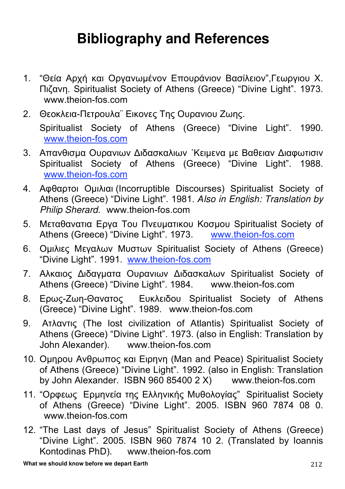
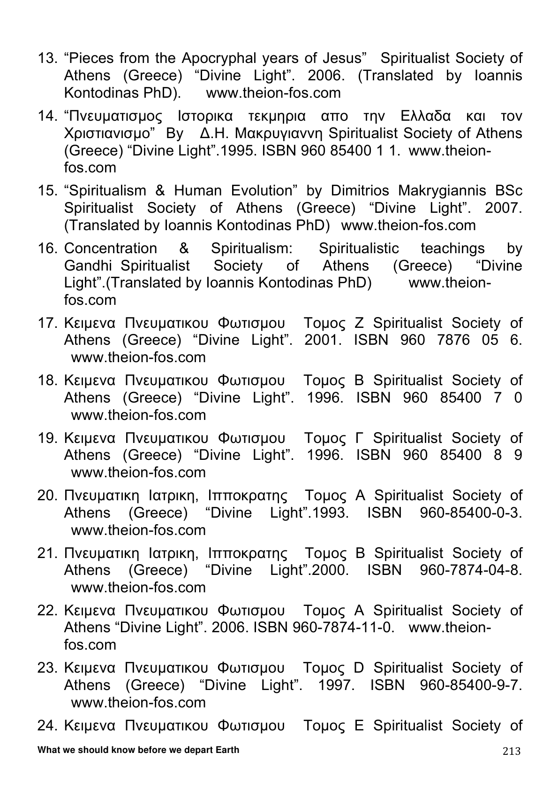
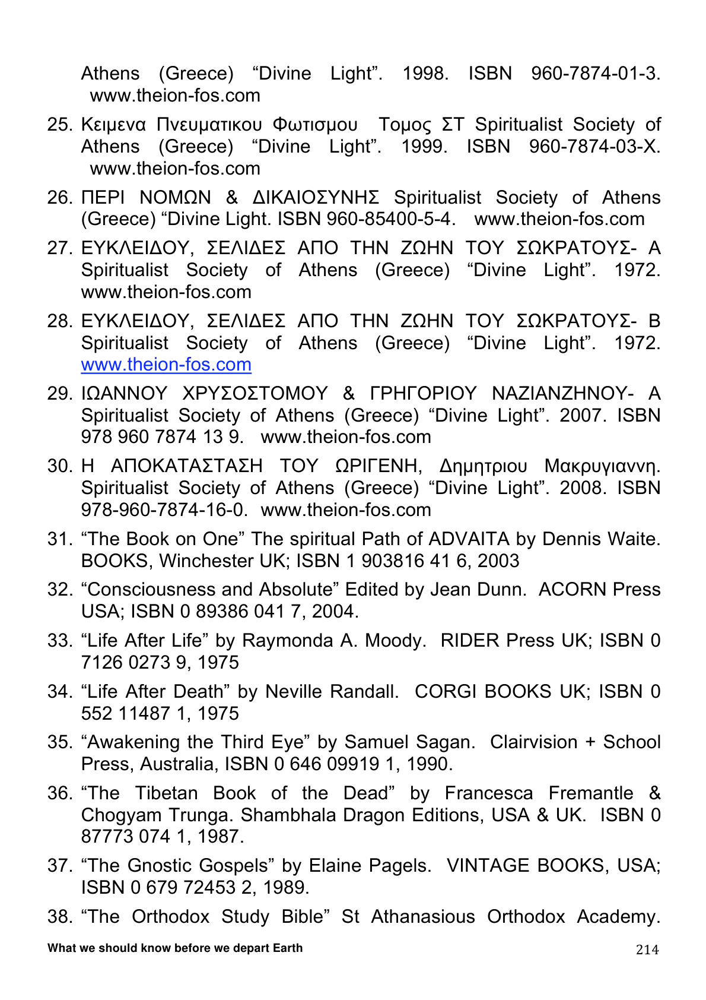

WHAT WE SHOULD KNOW BEFORE WE DEPART EARTH
Bibliography and References
The following pages are reproduced as images from the original published book to preserve the exact Greek lettering and bibliography formatting.



· · ·
· · ·Thomas Nelson Publishers, Nashville, Tennessee. 1993.
39. The Analytical Lexicon to the Greek New Testament, William D Mounce Zondervan Greek Reference Series. 1993. ISBN 92-43226.
40. Greek and English Interlinear New Testament (TNIV/NLT), W D Mounce & R Mounce Zondervan. 2008. ISBN 978—0-310-29082-7.